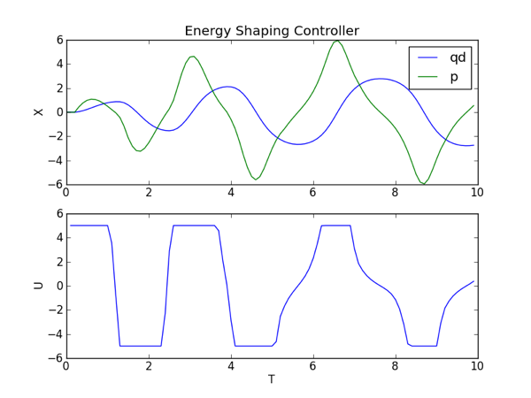

Design energy shaping swing-up controller¶
If the input torque is limited, the linear feedback controller may be unable to bring the pendulum to the upright configuration from an arbitrary initial condition. Let’s use trep to help create a swing-up controller based on the energy of the system.
Create pendulum system¶
The code used to create the pendulum system is identical to the last section,
except a new parameter uMax (highlighted below) has been added that sets the
maximum absolute value of the input.
import math
from math import pi
import numpy as np
from numpy import dot
import trep
import trep.discopt
from trep import tx, ty, tz, rx, ry, rz
import pylab
# Build a pendulum system
m = 1.0 # Mass of pendulum
l = 1.0 # Length of pendulum
q0 = 0. # Initial configuration of pendulum
t0 = 0.0 # Initial time
tf = 10.0 # Final time
dt = 0.1 # Sampling time
qBar = pi # Desired configuration
Q = np.eye(2) # Cost weights for states
R = np.eye(1) # Cost weights for inputs
uMax = 5. # Max absolute input value
system = trep.System() # Initialize system
frames = [
rx('theta', name="pendulumShoulder"), [
tz(-l, name="pendulumArm", mass=m)]]
system.import_frames(frames) # Add frames
# Add forces to the system
trep.potentials.Gravity(system, (0, 0, -9.8)) # Add gravity
trep.forces.Damping(system, 1.0) # Add damping
trep.forces.ConfigForce(system, 'theta', 'theta-torque') # Add input
# Create and initialize the variational integrator
mvi = trep.MidpointVI(system)
mvi.initialize_from_configs(t0, np.array([q0]), t0+dt, np.array([q0]))
# Create discrete system
TVec = np.arange(t0, tf+dt, dt) # Initialize discrete time vector
dsys = trep.discopt.DSystem(mvi, TVec) # Initialize discrete system
xBar = dsys.build_state(qBar) # Create desired state configuration
Design energy shaping swing-up controller¶
It can be easily shown that a control law to stabilize a one-link pendulum to a reference energy is
where \(E\) is the current energy of the system, \(\bar{E}\) is the reference energy, and \(K\) is any positive number. Therefore, the only thing that must be done to implement the energy contoller is calculate the reference energy and pick a positive gain value.
system.get_config('theta').q = qBar
eBar = system.total_energy()
KEnergy = 1
# Reset discrete system state
dsys.set(np.array([q0, 0.]), np.array([0.]), 0)
This is done by setting the system to the desired state and using the
trep.System.total_energy method to get the desired energy level, which is
called eBar. The gain is set to one using KEnergy = 1. Afterwards, the
system must be reset to its initial condition.
Simulate the system forward¶
The system is simulated forward in the exact same way as in the last section.
T = [mvi.t1] # List to hold time values
Q = [mvi.q1] # List to hold configuration values
X = [dsys.xk] # List to hold state values
U = [] # List to hold input values
while mvi.t1 < tf-dt:
x = dsys.xk # Get current state
xDot = x[1] # Get equivilant of angular velocity
e = system.total_energy() # Get current energy of the system
eTilde = e - eBar # Get difference between desired energy and current energy
# Calculate input
if xDot == 0:
u = np.array([uMax]) # Kick if necessary
else:
u = np.array([-xDot*KEnergy*eTilde])
u = min(np.array([uMax]), max(np.array([-uMax]),u)) # Constrain input
dsys.step(u) # Step the system forward by one time step
T.append(mvi.t1) # Update lists
Q.append(mvi.q1)
X.append(x)
U.append(u)
This time u is set to the energy shaping controller. Since the energy
shaping controller depends on the angular velocity it needs a “kick” if the
angular velocity is zero to get it going.
In addition the constraint on the input is included.
Visualize the system in action¶
The visualization is created in the exact way it was created in the previous sections.
trep.visual.visualize_3d([ trep.visual.VisualItem3D(system, T, Q) ])
# Plot results
ax1 = pylab.subplot(211)
pylab.plot(T, X)
pylab.title("Energy Shaping Controller")
pylab.ylabel("X")
pylab.legend(["qd","p"])
pylab.subplot(212, sharex=ax1)
pylab.plot(T[1:], U)
pylab.xlabel("T")
pylab.ylabel("U")
pylab.show()

Let’s also plot the state and input verse time.
In the animation you can see that the pendulum swings-up and approaches the upright configuration. It does not quite get there because the damping term is not accounted for in the controller. However, it should be close enough that the linear controller designed in the last section can take over and stabilize to the upright configuration. Also, from the plot you can see that the input is limited from -5 to +5.
Complete code¶
Below is the entire script used in this section of the tutorial.
1 2 3 4 5 6 7 8 9 10 11 12 13 14 15 16 17 18 19 20 21 22 23 24 25 26 27 28 29 30 31 32 33 34 35 36 37 38 39 40 41 42 43 44 45 46 47 48 49 50 51 52 53 54 55 56 57 58 59 60 61 62 63 64 65 66 67 68 69 70 71 72 73 74 75 76 77 78 79 80 81 82 83 84 85 86 87 88 89 90 91 92 93 94 95 96 97 98 99 100 101 | # enerygShapingSwingupController.py
# Import necessary python modules
import math
from math import pi
import numpy as np
from numpy import dot
import trep
import trep.discopt
from trep import tx, ty, tz, rx, ry, rz
import pylab
# Build a pendulum system
m = 1.0 # Mass of pendulum
l = 1.0 # Length of pendulum
q0 = 0. # Initial configuration of pendulum
t0 = 0.0 # Initial time
tf = 10.0 # Final time
dt = 0.1 # Sampling time
qBar = pi # Desired configuration
Q = np.eye(2) # Cost weights for states
R = np.eye(1) # Cost weights for inputs
uMax = 5. # Max absolute input value
system = trep.System() # Initialize system
frames = [
rx('theta', name="pendulumShoulder"), [
tz(-l, name="pendulumArm", mass=m)]]
system.import_frames(frames) # Add frames
# Add forces to the system
trep.potentials.Gravity(system, (0, 0, -9.8)) # Add gravity
trep.forces.Damping(system, 1.0) # Add damping
trep.forces.ConfigForce(system, 'theta', 'theta-torque') # Add input
# Create and initialize the variational integrator
mvi = trep.MidpointVI(system)
mvi.initialize_from_configs(t0, np.array([q0]), t0+dt, np.array([q0]))
# Create discrete system
TVec = np.arange(t0, tf+dt, dt) # Initialize discrete time vector
dsys = trep.discopt.DSystem(mvi, TVec) # Initialize discrete system
xBar = dsys.build_state(qBar) # Create desired state configuration
# Design linear feedback controller
Qd = np.zeros((len(TVec), dsys.system.nQ)) # Initialize desired configuration trajectory
thetaIndex = dsys.system.get_config('theta').index # Find index of theta config variable
for i,t in enumerate(TVec):
Qd[i, thetaIndex] = qBar # Set desired configuration trajectory
(Xd, Ud) = dsys.build_trajectory(Qd) # Set desired state and input trajectory
Qk = lambda k: Q # Create lambda function for state cost weights
Rk = lambda k: R # Create lambda function for input cost weights
KVec = dsys.calc_feedback_controller(Xd, Ud, Qk, Rk) # Solve for linear feedback controller gain
KStabilize = KVec[0] # Use only use first value to approximate infinite-horizon optimal controller gain
# Design energy shaping swing-up controller
system.get_config('theta').q = qBar
eBar = system.total_energy()
KEnergy = 1
# Reset discrete system state
dsys.set(np.array([q0, 0.]), np.array([0.]), 0)
# Simulate the system forward
T = [mvi.t1] # List to hold time values
Q = [mvi.q1] # List to hold configuration values
X = [dsys.xk] # List to hold state values
U = [] # List to hold input values
while mvi.t1 < tf-dt:
x = dsys.xk # Get current state
xDot = x[1] # Get equivilant of angular velocity
e = system.total_energy() # Get current energy of the system
eTilde = e - eBar # Get difference between desired energy and current energy
# Calculate input
if xDot == 0:
u = np.array([uMax]) # Kick if necessary
else:
u = np.array([-xDot*KEnergy*eTilde])
u = min(np.array([uMax]), max(np.array([-uMax]),u)) # Constrain input
dsys.step(u) # Step the system forward by one time step
T.append(mvi.t1) # Update lists
Q.append(mvi.q1)
X.append(x)
U.append(u)
# Visualize the system in action
trep.visual.visualize_3d([ trep.visual.VisualItem3D(system, T, Q) ])
# Plot results
ax1 = pylab.subplot(211)
pylab.plot(T, X)
pylab.title("Energy Shaping Controller")
pylab.ylabel("X")
pylab.legend(["qd","p"])
pylab.subplot(212, sharex=ax1)
pylab.plot(T[1:], U)
pylab.xlabel("T")
pylab.ylabel("U")
pylab.show()
|